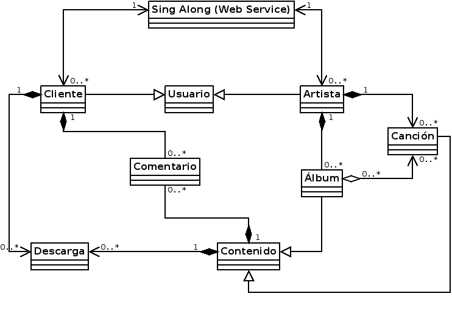

Stakeholders
Requerimientos de dominio
Diagrama de análisis estático
Otros requerimientos de dominio a partir del diagrama
Diagrama de estados para la clase: Album

Diagramas de actividad: Comprar álbum y publicar álbum
Comprar álbum

Publicar álbum
Casos de uso
A continuación se especifican dos casos de usos: comprar y comentar un álbum
Caso de uso 1: Comprar álbum
Contexto: Un usuario quiere comprar un álbum
Actores primarios: Usuario
Actores de soporte: Paypal
Precondiciones
El usuario se puede comunicar con el sistema
El usuario está logeado en el sistema
Postcondiciones de éxito
El usuario se ha comprado el disco
(Opcional) El usuario ha recibido el disco físicamente
Condiciones de fracaso
El usuario no se ha podido comprar el disco
El usuario no ha recibido el disco en formato físico
Flujo básico
Extensión
2.a El usuario no se encuentra logeado
2.a.1 Se ejecuta la inclusión login
2.a.1.1 El sistema pregunta por el username y la contraseña
2.a.1.1.1 Se ejecuta la extensión registrar usuario
3.a El usuario rechaza la confirmación
3.a.1 Vuelve al paso 1
5.a Los datos son incorrectos
5.a.1. Vuelve al paso 5
Caso de uso 2: Comentar un álbum
Contexto: Un usuario quiere comentar un álbum
Actores primarios: Usuario
Actores de soporte: Paypal
Precondiciones
El usuario se puede comunicar con el sistema
El usuario está logeado en el sistema
El usuario tiene que haberse comprado/descargado el álbum previamente para poder comentarlo
Postcondiciones de éxito
El usuario ha comentado un álbum con éxito
Sólo se puede dejar un comentario/valoración por usuario
Condiciones de fracaso
El usuario no ha podido comentar el álbum
El usuario ha hecho más de un comentario en el mismo álbum
Flujo básico
Extensión
3.a El usuario no se encuentra logeado
3.a.1 Se ejecuta la inclusión login
3.a.1.1 El sistema pregunta por el username y la contraseña
3.a.1.1.1 Se ejecuta la extensión registrar usuario
4.a El usuario no ha comprado/descargado previamente el disco
4.a.1 Se ejecuta la inclusión comprar álbum
4.a.1.1 El sistema pregunta por el username y la contraseña
4.a.1.1.1 Se ejecuta la extensión registrar usuario
6.a El usuario cancela la publicación
6.a.1 Vuelve al paso 1
(Opcional) En el caso de que haya un límite de palabras para cada comentario
8.a El comentario no cumple con la longitud máxima establecida
8.a.1 Vuelve al paso 6
9.a El sistema no puede guardar el nuevo comentario
9.a.1 Vuelve al paso 7
Requerimientos funcionales
Artistas y clientes acceden al sistema a través de un navegador web.
Una vez identificado el artista (la primera vez que entran en el sistema, se tienen que registrar) suben sus canciones en formato Wav (16 bits, 44.1 kHz). Así, podemos utilizar el archivo para añadir una canción al album, y convertirlo en varios formatos de compresión. Se quiere evitar vender álbumes con canciones convertidas desde formato mp3, o descomprimidas y recomprimidas repetidamente.
Junto con el archivo, el artista debe introducir el título de la canción, autores, fecha de producción y (opcional) una descripción.
El sistema automáticamente convierte los archivos Wav a diferentes formatos de compresión. Actualmente, los formatos de compresión son mp3 y ogg a 192, 128 y 96 kbps (es probable que en el futuro se añadan más formatos y otros se eliminen). Algunos de estos archivos (excepto para los archivos de formato Wav) estarán disponibles para los usuarios para descargar o streaming.
En caso de no poder subir archivos grandes (ej: mala conexión), el artista puede enviar físicamente las canciones vía mail en formato digital (memoria USB, CD, etc.). En este caso, el sobre debe estar identificado con el nombre real y registrado del artista. Es necesario también para el dispositivo de almacenamiento contener un archivo "info.txt" que contenga información sobre las canciones (título, autores, etc).
Las canciones en dispositivos físicos deberán introducirse en el sistema por un operador humano, el cúal necesitará acceso al sistema vía una interficie gráfica (NO un navegador Web)
El artista puede definir álbumes simplemente proveyendo una lista de canciones(los archivos Wav no pueden superar el límite), la fecha de producción, comentarios opcionales, y un conjunto de palabras clave qye describan el estilo de música. El artista también podrá actualizar el material promocional en formato digital.
En teoría, el artista puede añadir la misma canción a diferentes álbumes. Sin embargo, se deberá evitar para no confundir a los usuarios que siguen al artista
El usuario podrá comprar álbumes personalizados, seleccionando las canciones del artista deseadas. Si el artista lo permite, será posible mezclar canciones de otros artistas. En este caso, el coste total se calculará sobre el precio base de cada canción.
El sistema accepta imágenes (jpg o png), texto (PDF) y videos (mpeg). El sistema incluirá un manual que explique a los artistas como crear y subir material promocional e indique el límite de memoria permitido para cada formato.
El sistema se encarga de la gestión del material promocional y de la distribucción a los usuarios cuando compren las canciones o álbumes.
Los usuarios habituales deberán registrarse si quieren entrar en el servicio Web. Esto es para generar las estadísticas de los archivos descargados, los votos para un artista o canción, etc.
El registro deberá ser simple: username y contraseña. Opcionalmente se pedirá el nombre real y la dirección de email. El email permite a los usuarios recibir notificaciones del sistema acerca de contenido de interés.
Una vez identificado y logeado en el sitema, el usuario puede buscar artistas, saltar de un artista a otro, y mostar informacón del artista: cuales son los álbumes y canciones asociados, y que canciones no pertenecen a ningún álbum.
Algunas canciones pueden descargarse individualmente (o escucharse mediante streaming en la página web). Cada canción y álbum debe tener un área de valoración, dónde los usuarios puedan añadir comentaros o reviews. Se permitirá un comentario o review por usuario, pero sólo si el usuario ha comprado o descargado la canció o álbum
Opcionalmente, el usuario puede elegir si al comprar el álbum, quiere el CD el cual se graba y envia físicamente a la dirección del usuario. En este caso, el precio de compra incluye el precio de la compra, el grabado y el envio del CD. El precio de compra y grabado es fijo, pero el de envio depende del país del usuario.
El sistema debe incetivar la cultura de hacer donaciones. Aunque el usuario se descargue un archivo gratuito, se quedrá agradecer al artista haciendo una pqueña donación. Por este caso, en la página de descarga siempre deberá haber un link para donar dinero usando Paypal.
Paypal como intermediario no cobrará dinero por sus serviciones.
El sistema dejará buscar a los artistas por nombre o estilo de música. El resultado de la música deberá estar ordenado en cascada según su ránking ("rendimiento") que combina:
La página principal de cada usuario deberá tener 3 listas top 10 (en un futuro podrá ser modificado):
Está previsto que al ser un sistema abierto y sin filtos, se registren nuevos artistas, y estos puedan subir canciones de mala calidad. Es por ello, que el usuario pueda encontrar fácilmente los artistas de mayor éxito y con canciones de mayor calidad.
La información del artista deberá incluir una sección con artistas parecidos, para que el usuario encuentre a otros del mismo criterio. Una lista llamada "personas que escucha a ..."
También deberá haber una segunda lista llamada "artista del mismo estilo". Para generar esta lista es necesario tener en cuenta el porcentage de canciones de pares de artista que tienen el mismo estilo en común.
Las listas estarán ordenadas por el rendimiento del artista.
Parte de la página principal de cada usuario está dedicada a las notificaciones. Un usuario se puede suscribir a un artista o a un estilo. El sistema automáticamente notifica al usuario cuando el artista al que se está suscrito publica nuevas canciones. También se notifica se notifica cuando una nueva canción de un estilo se publica.
Si el usuario lo permite se el enviarán las notificaciones vía mail. Aparte de la notificación, en el email también se le incluirá las listas top 10. El mensaje se enviará en formato HTML ya que permite al usuario estar a un paso de la canción.
Tanto artistas como operadores pueden dejar listar canciones y álbumes, borrandolos del sistema. Una vez que se deja de listar, no serán visibles (sin embargo, puede seguir estando visible para los artistas y operadores, que podrán volverlas a listar más adelante).
Requerimientos no funcionales
La plataforma SingAlong debe ser intuitiva y fácil de utilizar
El tiempo de aprendizaje por usuario no debe ser mayor a 15 minutos
La plataforma debe incluir un tutorial básico
El sistema debe incluir mensajes de error que sean informativos y orientados al usuario final
La plataforma debe estar diseñada de forma Responsive, para que el servicio pueda ser accesible desde diversas plataformas como ordenadores personales, móviles inteligentes o tablets
La plataforma podrá utilizarse en dos idiomas: inglés y español
El tiempo de proceso por parte del servidor deberá ser menos a 200 milisegundos
El tiempo medio en procesar una operación de la base de datos será de 50-100 milisegundos
El tiempo de respuesta de las búsquedas de canciones o álbums o artistas deberá ser inferior a un segundo
El tiempo de descarga deberá ser acceptable, acorde con la conexión de banda ancha que tenga cada usuario
El tiempo de refresco de la pantalla debe ser menor a 1 segundo
El sistema deberá soportar 200 transacciones/segundo con picos de 600 transacciones/segundo
La base de datos MySQL deberá soportar 800 solicitudes/segundo
El sistema deberá soportar la subida de 10.000 nuevas canciones/día
El sistema deberá soportar la descarga de 3.000 canciones/día
El tiempo de recuperación de la plataforma deberá ser menor a 2 minutos
La tasa de errores cometidos por el usuario deberá ser menor del 1% de las transacciones totales ejecutadas en el sistema
El sistema debe tener una disponibilidad del 99,99% de las veces en que el usuario intente accederlo (365 días al año, 7 días a la semana, 24 hrs)
El promedio de duración de errores no podrá ser superior a 15 minutos
La probabilidad que el sistema falle no deberá ser superior al 0,05
El sistema debe estar restringido a accesos o modificaciones no autorizadas
La plataforma SingAlong se encontrará alojada en la plataforma Google Cloud
Cada dos semanas se tendrán reuniones con el cliente para revisar el proyecto, y añadir posibles mejoras o hacer cambios en la plataforma a nivel de usabilidad
Cada semana el equipo encargado del desarrollo se reunirá para reportar el esfuerzo invertido en la plataforma, sus avances y problemas que hayan surgido hasta el momento
Front-end:
La interfaz de usuario será implementada para navegadores web únicamente con HTML5 y JavaScript
Back-end:
La base de datos estará escrita en lenguaje MySQL
Se utilizará una base de datos de Oracle
Herramientas de desarrollo:
Se utilizará la plataforma de desarrollo Eclipse
Se utilizarán herramientas de integración continua como Jenkins y Maven
Herramientas de testing:
Se utilizarán herramientas como Apache JMeter, Sellenium y Badboy para testear la plataforma y sus conexiones
Otros
Debe especificarse un plan de recuperación ante desastres para el sistema al ser desarrollado
ISO 8601 Para seguir la notación estándar utilizada para representar la fecha y la hora
ISO 9126 Para seguir el estándar internacional para la evaluación de la calidad del software
La plataforma Paypal debe estar activa para poder realizar las compras
Los servidores de Google Cloud deberán estar operativos para que el servicio SingAlong funcione correctamente
No se podrán copiar productos de otros artistas, incluidos los que no se encuentren registrados en la plataforma
No se podrán recoger o cualquier forma de recolectar información acerca de usuarios sin su consentimiento
No se podrá difamar, abusar, acosar, acechar, amenazar o de alguna forma violar los derechos legales de otros
No se podrá publicar, anunciar, subir, distribuir contenido que sea inapropiado, indecente, transgresor, difamatorio, obsceno o ilegal
No se podrán subir archivos o material que infrigan las leyes de propiedad intelectual (o derechos de privacidad) a menos que se controlen esos derechos
No se podrá subir material que contegan virus, archivos corruptos, o cualquier otro tipo de software que pueda dañar otros sistemas/equipos
No se podrá falsificar o eliminar la referencia del autor, referencia legal, avisos, designaciones propietarias, rótulos de origen o fuente del software u otro material que se suba a la plataforma
No se podrá restringir o inhibir que otros usuarios puedan usar y disfrutar de los servicios que ofrece la plataforma
***
No se podrán violar leyes o regulaciones apicables (determinado a cada país)
Protección de datos de cada uno de los usuarios del sistema
Impuestos aplicables a los productos en cada país